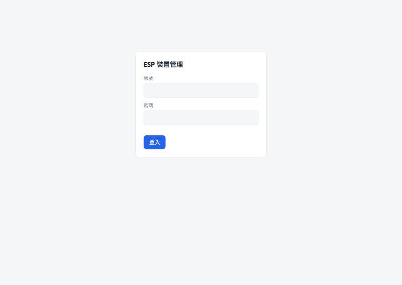
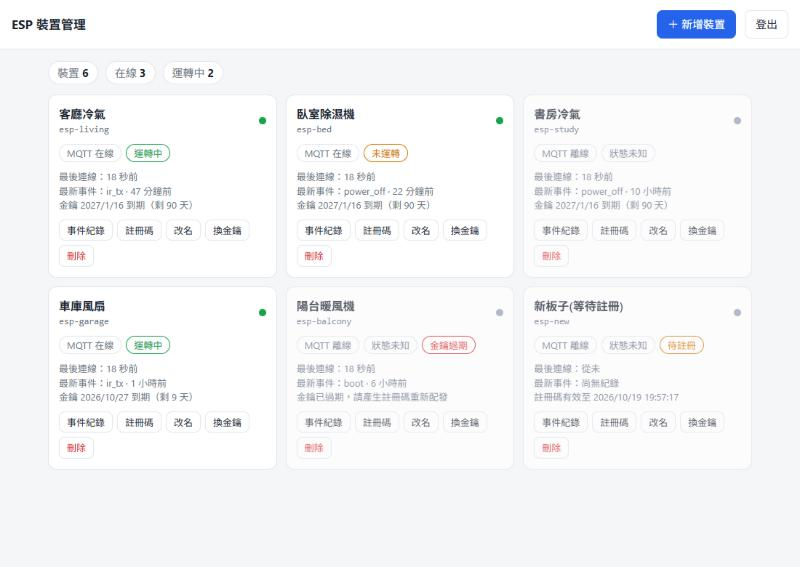
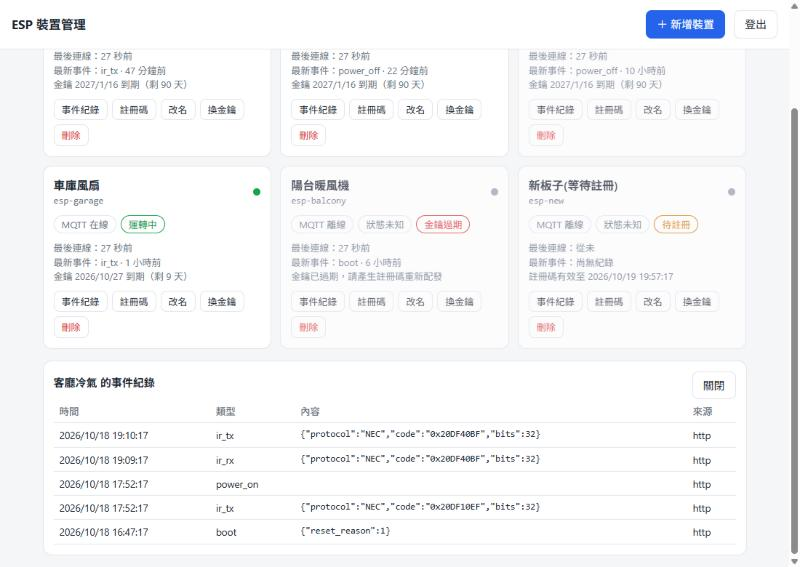
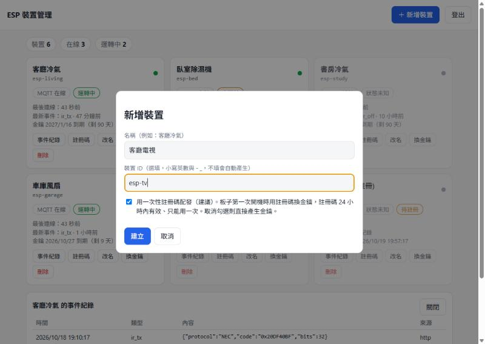
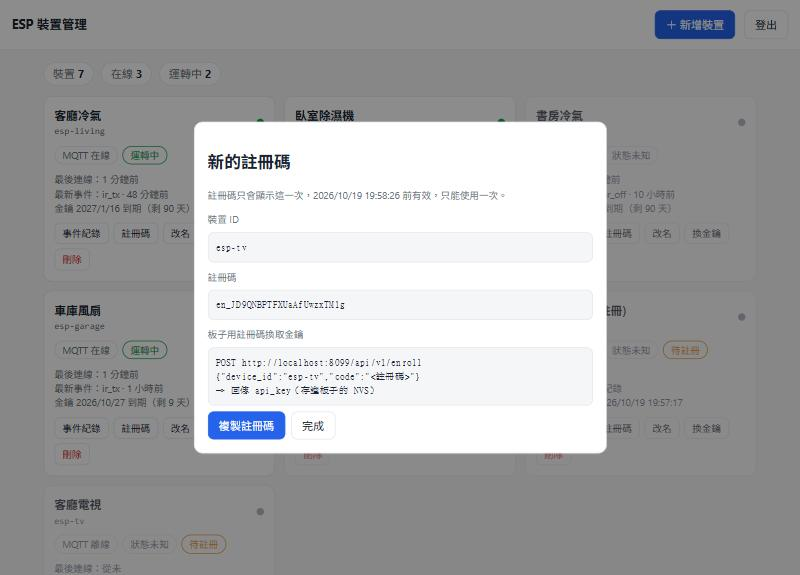
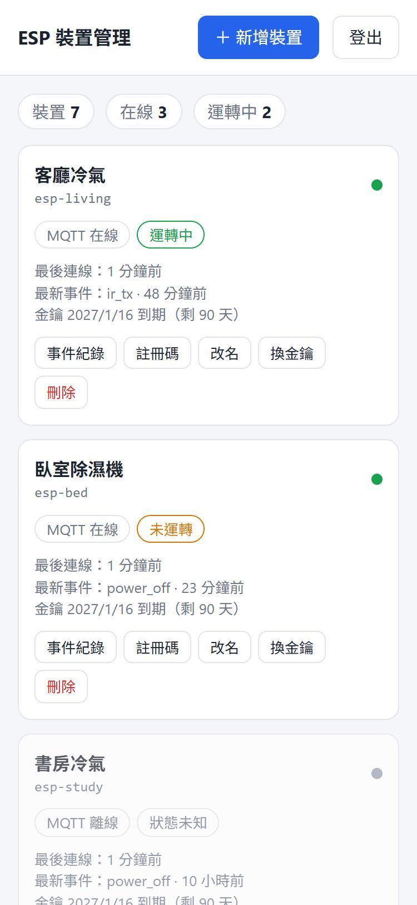

API Key、MQTT、一次性註冊碼，還有會自己換掉的 Key。順便記下這一路踩到的坑。
這陣子手邊的 ESP32-C6 要做一件聽起來很簡單的事：把紅外線發射的訊號、設備開關機的紀錄，通通丟到雲端存起來，然後打開網頁，一眼看出「這塊板子現在是死是活、設備有沒有在跑」。
說實話，我一開始的想法是：不就一支 API 嗎？結果越做越發現，真正麻煩的從來不是「收資料」，而是 怎麼讓一堆板子安安全全地證明自己是誰。Key 要怎麼塞進板子？外洩了怎麼辦？放在現場沒人管的板子，Key 能不能自己換？
這篇就是把整個過程記下來：架構怎麼選、Key 的生命週期怎麼設計、部署到 Fly.io 的細節，以及我（和 Claude Code）一路踩到的坑。先講在前面：伺服器端已經上線、也測過了，但 ESP32 韌體我只寫了範例，還沒有真的編譯、燒進板子。後面會老實交代。
需求一開始看起來像要拆成兩個服務：一個收 API、一個當 MQTT broker。我最後把它們塞進同一個 Node 程式：
為什麼不拆？因為裝置少、資料量小，一台機器綽綽有餘。更實際的理由是：MQTT 的連線事件可以直接寫進資料庫，不用在兩個服務之間同步「誰在線上」。
代價：只能跑一台機器。broker 的連線狀態在記憶體裡、SQLite 又在單一 volume 上，一旦 fly scale count 2，你會看到裝置在兩台機器之間跳來跳去。真的要擴充，就得把 broker 拆出去、資料庫換掉。現階段我選擇不管它。
一開始我也在想，兩條路是不是太多。後來覺得它們問的是不同的問題：
| HTTP（API Key） | MQTT | |
|---|---|---|
| 回答什麼 | 剛剛發生了什麼（發射了哪個紅外線碼、開機、關機） | 它現在還活著嗎、設備有沒有在運轉 |
| 特性 | 一筆一筆的紀錄，要留存 | 持續連線，斷了就知道 |
| 斷電時 | 不會有任何訊號 | 連線一斷、keepalive 逾時，broker 就標成離線 |
「板子被拔電源」這種事，光靠 HTTP 是看不出來的，因為沒人會呼叫你。MQTT 的長連線反而最適合：連上就是在線、斷了就是離線，我只要接 broker 的連線事件，不用自己寫心跳逾時判斷。
另外 broker 有做權限：每塊板子只能發布自己的 devices/<id>/state、event、status，也只能訂閱自己的 cmd。不然隨便一塊板子的 Key 外洩，就能假冒別人回報狀態，那就不好玩了。
這是整件事我花最多時間的地方。
最直覺的做法是把 API_KEY 寫在 .ino 裡。但這樣每塊板子都要改程式、重新編譯，而且一個不小心就會連 Key 一起 push 到 GitHub（它真的會「裸奔」）。
ESP32 有個叫 NVS（Non-Volatile Storage）的東西：flash 裡一塊獨立的小空間，像一張簡單的鍵值表，斷電不會消失、更新韌體也不會被洗掉。一把 Key 才幾十個 bytes，幾乎不佔空間。所以所有板子可以燒同一份韌體，Key 另外存在 NVS 裡。
可是還有個問題：Key 要先產生、再寫進板子，中間那份檔案或那行指令如果外流呢？所以我改成這樣：
/api/v1/enroll 換正式的 API Key，存進 NVS。POST /api/v1/enroll
{"device_id":"esp-living","code":"en_xxxxxxxxxxxxxxxxxxxxxx"}
→ 201 {"api_key":"dk_...","key_expires_at":1792000000000}這樣燒錄用的東西就算外流，過了 24 小時或被用掉一次就沒用了。這個端點不需要登入（註冊碼本身就是憑證），所以我另外加了失敗次數的節流，避免有人亂猜。
經驗談：伺服器永遠只存 Key 的 SHA-256 雜湊，連我自己都看不到原本的 Key。代價是 Key 只會在產生的那一刻顯示一次，錯過就只能重發。我覺得這個不方便是值得的。
板子放在現場沒人管，Key 總不能永遠有效。但如果只是單純加個到期日，到期那天所有板子就一起失聯，那更慘。所以我做成「有期限，但板子會在到期前自己換」：
/heartbeat。剩下不到三分之一壽命時，伺服器回 should_rotate: true。/rotate 拿到新 Key，先確認寫進 NVS 成功，才改用新 Key。寬限期是為了一個很現實的情境：板子在寫 NVS 的時候突然斷電。如果新 Key 回應丟了、舊 Key 又馬上失效，板子就永遠被鎖在外面。有了寬限期，它重開機後拿舊 Key 再打一次 /rotate，就能拿到新的。
這是故意的。如果過期的 Key 還能 rotate，那一把外洩的 Key 就能無限續命。代價是：板子如果離線超過 Key 的壽命，就得由管理者在頁面按「註冊碼」重新配發。
老實講的限制：自動換 Key 保護的是「舊 Key 外洩」。如果有人拿到的是目前這把 Key，他也能呼叫 /rotate，甚至搶先把 Key 換掉，讓真正的板子拿到 401。好處是這種情況看得見：那塊板子會突然離線，你在頁面按一下「註冊碼」重新配發，攻擊者手上的 Key 就作廢了。要防「Key 被複製走」，得靠 flash encryption 這類硬體層的保護，這篇沒有做。
前端就是一個靜態頁面加一點原生 JavaScript，沒有框架。帳號密碼登入後，伺服器發一個 HttpOnly、SameSite=Strict 的 session cookie。
以下截圖都是我在本機灌示範資料拍的，不是正式站。






幾個重點設定：
tls handler，讓 Fly 幫忙終結 TLS，板子連的是 mqtts。auto_stop_machines = "off"：機器一休眠，所有裝置就會顯示離線，這是最容易忘記的一項。fly secrets，不進程式碼。fly launch --copy-config --no-deploy
fly volumes create hub_data --size 1 --region nrt
fly secrets set ADMIN_USER=admin ADMIN_PASSWORD="…" SESSION_SECRET="…"
fly deploy --remote-only --ha=false部署前我會先確認 volume 有最近的快照，沒有就手動建一個、等它跑完再部署。這次部署完，我對線上跑了一次完整流程：建測試裝置、用註冊碼換 Key、發事件、MQTT 連線、換 Key、最後刪掉測試裝置，全部通過才算數。
這一段是我自己最想留下來的。每一個都是真的踩到的。
我多寫了一行空的 [http_service.checks]，後面又接 [[http_service.checks]]，TOML 直接報錯「已經是 table，不能再當 array table」。結果 volume 和 secret 的指令全都跟著失敗，因為 flyctl 每次都要先解析 fly.toml。刪掉那一行就好，但花了我一點時間才想到是設定檔本身的問題。
fly volumes snapshots list hub_data 會回 volume hub_data not found。要用 vol_xxxx 這串 ID。另外 volume 才建立兩小時的時候，每日自動快照根本還沒跑，所以「有近期快照」要自己動手建。
在 Git Bash 用 curl -d 送中文名稱，存進去的資料變成問號。一開始我還以為是伺服器的編碼寫錯，查半天才發現是 shell 傳參數時就壞了。改用 Node 送就正常。
這個是我實際在瀏覽器點過才抓到的。我的程式裡有 條件 ? 元素 : null 這種寫法，結果把 null 直接丟給原生的 replaceChildren()，它很老實地把 null 轉成文字 "null" 貼在畫面上。API 測試全綠，畫面卻是歪的。教訓是：測試過了不代表畫面對。
建立裝置時，我先組好回傳的 device 物件，才去產生註冊碼，結果回傳裡「註冊碼到期時間」永遠是空的。這個是自動測試抓到的。物件字面值是由上往下算的，順序寫反就是 bug。
新版的 better-sqlite3 在 Node 16 的 Windows 上找不到預編譯檔，退回去現場編譯，然後因為沒有 Visual Studio 就死了。我把它釘在 ~8.7.0，Docker 裡用 Node 20 一樣能跑。
這裡要老實講，免得讀的人以為這是個完工的東西：
setInsecure()，連線有加密，但不驗證對方的身分。正式用要換成放根憑證。回頭看，這個專案最有意思的部分反而不是 MQTT 或 API，而是「Key 的一生」：怎麼發、怎麼存、怎麼換、怎麼在出事時收回來。每一個環節都有「方便」和「安全」的取捨，我的選擇是：方便的事情交給程式自動做（自動換 Key），危險的事情交給人決定（過期重發）。
這次是和 Claude Code 一起做的，伺服器、前端、測試和部署都走完了；ESP32 那一半留給下一輪，等我在板子上真的跑起來，再來補一篇。
以上內容為個人實作心得，原始碼和交接文件都在 GitHub，若有任何問題或建議，歡迎到那邊開 issue 交流。